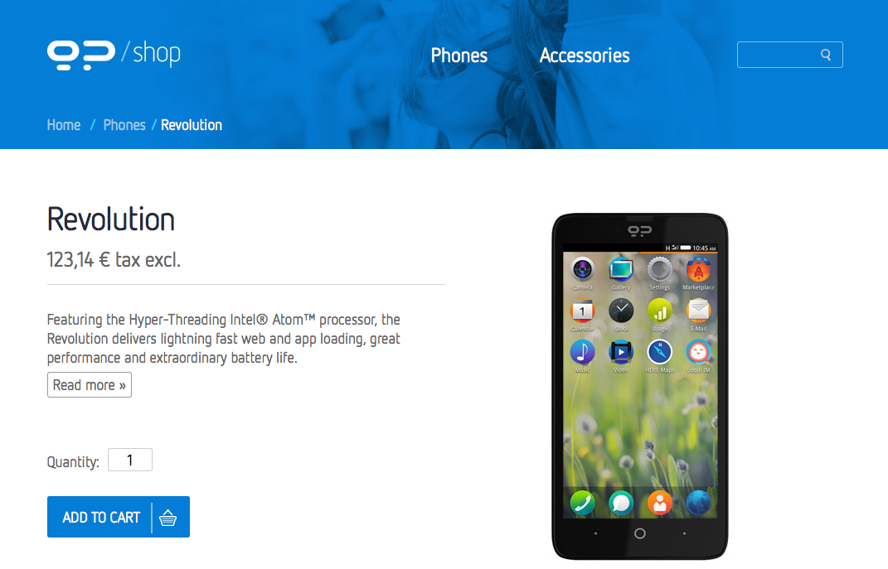

在 Geeksphone Revolution 開箱 一文中說到我已經拿到了西班牙手機商 Geeksphone 所販 售的 Geeksphone Revolution 手機，而這隻手機由於台灣並未上市，因此無法在台灣電信 商購買，本文簡單紀錄一下個人購買該手機的過程，以及過海關時所需要申請的文件該如何 填寫等資訊。
認真的說，直到我成功 porting 這隻手機到不同平台之前，這隻手機都不是開發者友好的， 我將在下篇文章說明為什麼，因此除非您是開發者，或是對自己/對我很有信心，並不建議 購買此手機。
首先連結到 Geeksphone Revolution 購買網頁，點選 ADD TO CART

接著就會看到右上角的 Shopping Cart 數量加一
提醒一下，個人購買超過 2 隻手機，寄到海關會很麻煩，詳情請 google NCC 手機 等關鍵字。
點選 Shopping Cart 的 Check out 按鈕後，會進入到確認頁面 (價錢單位為 歐元 )
你會需要在這頁面填選地址，可以使用 中華郵政地址英譯 或是 mosky 的 ZIPCODETW 系統 進行轉換，將地址變成英文
接下來就是運送方式，我們只有一個 UPS 可選
都完成後接下來就是付費方式了，很不幸的只有信用卡可以用…..
都完成後，在自己的帳號下的 Order history 裡面的 Status 可以看到處理狀況
我的情況是 5/31 下訂， 6/1 訂單處理完畢並且已經開始透過 UPS 寄送
因為已經開始透過 UPS 寄送了，所以你的信箱會收到 UPS 寄貨的資訊，然後你的東西 一
定會卡在海關 ，此時 UPS 寄件進度如下
接著就會收到 UPS 的通知，跟你要身分證正反影本、手機規格(DM)以及填寫 個案委任書 以及 自用切結書 ，
我們先來看看個案委任書，這份只要簽名就夠了
真正麻煩的是自用切結書，要填寫這隻手機的 工作頻率 以及 輸出功率 ，工作頻率就
是這隻手機支援的通訊模式，而輸出功率這個就有點難倒我了，因此我是照 iphone 的資訊
填寫 (實際上關於無線部分是一樣的，輸出功率應該也要一樣才對，請參考: 國外寄 iPhone4S 回台，海關、NCC 卡關攻略)
資料填妥後，請 UPS 的報關人員幫忙進行報關的動作，其實處理速度比我預期的快，因此最後我的 UPS 運送紀錄如下